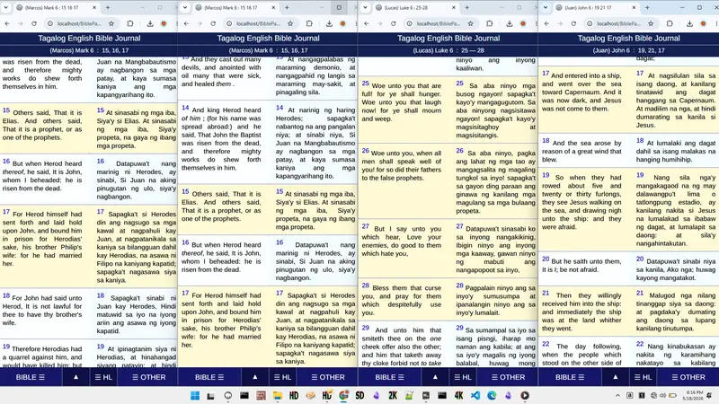

Biblia Bilingüe: Inglés - Español
El libro de esta ley nunca se apartará de tu boca;
antes de día y de noche meditarás en él,
para que guardes y hagas
conforme á todo lo que en él está escrito:
porque entonces harás prosperar tu camino,
y todo te saldrá bien.
- Joshua 1:8

Biblia en Línea en Inglés y Español para tu Diario Bíblico, que permite apilar hasta cuatro ventanas en un solo monitor Full HD. Este año 2026, he rediseñado el sitio web de 2012 EnglishTagalogBible.Com ante mi necesidad de leer los evangelios de Mateo, Marcos, Lucas y Juan simultáneamente para escribir en mi diario. El sitio web de 2012 fue un ministerio de Navigator Philippines, creado originalmente por el programador filipino Mike Pua de PuaSoft. Yo, Jestoni, he renovado el sitio web para el uso de personas a nivel internacional.
Llevar un diario bíblico es también lo mejor que existe, ya que aprendes mientras lees y escribes, y contemplas el maravilloso conocimiento de Dios. Lecciones desde el Antiguo Testamento hasta las entregadas a Jesús en el Nuevo Testamento, compartiéndonos la Palabra, la Luz, la Salvación, la Promesa de Oro de Dios y, lo más importante de todo, el Amor. Una búsqueda completa de la Biblia tiene una página dedicada AQUÍ que puedes visitar.

Puedes resaltar múltiples versículos, continuos o aleatorios, ingresando su número y presionando enter. Puedes copiar y pegar sin usar el ratón para arrastrar y seleccionar. Puedes personalizar abajo el tamaño y tipo de fuente, e incluso el fondo de tu lectura, para que sea personal para ti. Puedes navegar deslizando o usando las flechas izquierda y derecha para ir al capítulo o versículo siguiente o anterior.
Biblia disponible en Santa Biblia - Reina Valera 1909 (Spanish Language) World English Bible (English) King James Version KJV (English) Ang Biblia 1905 Young's Literal Translation BILINGÜE
PUEDES HACER CLIC EN TODOS LOS BOTONES DE ABAJO PARA PROBAR TU PERSONALIZACIÓN.
Y observa la página de muestra de la Biblia a continuación.
Cambia el tamaño de fuente, estilo, grosor, Biblia en paralelo y el fondo del sitio web.
| BEGOTTEN SON | Hijo unigénito |
| 16 For God so loved the world, that he gave his only begotten Son, that whosoever believeth in him should not perish, but have everlasting life. |
16 Porque de tal manera amó Dios al mundo, que ha dado á su Hijo unigénito, para que todo aquel que en él cree, no se pierda, mas tenga vida eterna.
|
| 17 For God sent not his Son into the world to condemn the world; but that the world through him might be saved. |
17 Porque no envió Dios á su Hijo al mundo para que condene al mundo, mas para que el mundo sea salvo por él.
|
| 18 He that believeth on him is not condemned: but he that believeth not is condemned already, because he hath not believed in the name of the only begotten Son of God. |
18 El que en él cree, no es condenado; mas el que no cree, ya es condenado, porque no creyó en el nombre del unigénito Hijo de Dios.
|
Serif
Serif
Serif
Sans-Serif
Sans-Serif
Sans-Serif
Sans-Serif
Sans-Serif
| BEGOTTEN SON | Hijo unigénito |
| 16 For God so loved the world, that he gave his only begotten Son, that whosoever believeth in him should not perish, but have everlasting life. |
16 Porque de tal manera amó Dios al mundo, que ha dado á su Hijo unigénito, para que todo aquel que en él cree, no se pierda, mas tenga vida eterna.
|
| 17 For God sent not his Son into the world to condemn the world; but that the world through him might be saved. |
17 Porque no envió Dios á su Hijo al mundo para que condene al mundo, mas para que el mundo sea salvo por él.
|
| 18 He that believeth on him is not condemned: but he that believeth not is condemned already, because he hath not believed in the name of the only begotten Son of God. |
18 El que en él cree, no es condenado; mas el que no cree, ya es condenado, porque no creyó en el nombre del unigénito Hijo de Dios.
|
ELIGE UNA LETRA MÁS GRUESA PARA UNA LECTURA MEJOR:
350
400
500
600
700
800
Background Settings For Website and Pages

COLOR DE FONDO PLANO
Haz clic en el cuadrado para arrastrar y elegir un color. Haz clic fuera y aplica.IMAGEN DE FONDO DEL SITIO
| BEGOTTEN SON | Hijo unigénito |
| 16 For God so loved the world, that he gave his only begotten Son, that whosoever believeth in him should not perish, but have everlasting life. |
16 Porque de tal manera amó Dios al mundo, que ha dado á su Hijo unigénito, para que todo aquel que en él cree, no se pierda, mas tenga vida eterna.
|
| 17 For God sent not his Son into the world to condemn the world; but that the world through him might be saved. |
17 Porque no envió Dios á su Hijo al mundo para que condene al mundo, mas para que el mundo sea salvo por él.
|
| 18 He that believeth on him is not condemned: but he that believeth not is condemned already, because he hath not believed in the name of the only begotten Son of God. |
18 El que en él cree, no es condenado; mas el que no cree, ya es condenado, porque no creyó en el nombre del unigénito Hijo de Dios.
|
El amor de DIOS es el centro de todo.
Nada perdura, salvo la palabra de Dios.
Dios es la palabra, y las palabras de Dios perdurarán. Y en la Tierra, Jesús es la Palabra de Dios, quien nos alimenta con el Conocimiento del Amor de Dios por todos nosotros.
Nadie conoce mejor al Padre Dios que el Hijo Unigénito. Pídele a Jesús que te dé a conocer al Padre Dios, y que tú seas conocido.
Juan 3 : 16
Porque de tal manera amó Dios al mundo, que ha dado a su Hijo unigénito, para que todo aquel que en él cree, no se pierda, mas tenga vida eterna.
Juan 3 : 16
Porque de tal manera amó Dios al mundo, que ha dado á su Hijo unigénito, para que todo aquel que en él cree, no se pierda, mas tenga vida eterna.
Soy el evangelista Jestoni de Filipinas, quien solía viajar con mi madre a diferentes lugares para escuchar y difundir las palabras de Dios. Dios me ayuda y me guía para volver a levantarme y difundir el evangelio de Dios nuevamente. He decidido compartir Diarios Bíblicos, este sitio web rediseñado, y pronto mis videos de YouTube con lecciones de Dios y de la Biblia. Y compartir que nadie nos ama más que JESÚS Y SU ÚNICO DIOS PADRE, quien es el más amoroso entre todos, por dentro y por fuera, y en todas partes.
Estoy aquí para ayudar a compartir con aquellas personas víctimas de acoso organizado (gang stalking), posesiones demoníacas, ataques espirituales de espíritus malignos marinos, o cualquier otra artimaña creada y diseñada por el reino de las tinieblas; nosotros somos la LUZ DE DIOS para derramar, destruir y salvar a otros de las trampas, manipulaciones y el engaño. Para lo cual, Dios nos dio la Biblia, las Palabras de Dios, y a Jesús como la palabra y la luz más grande de todas.
Para cualquier pregunta, puedes contactarme y enviarme un mensaje a angpagibigngdios@gmail.com.
En Facebook https://web.facebook.com/WorldBibleJournal.
En Instagram https://www.instagram.com/worldbiblejournal/.
En Twitter https://x.com/WBibleJournal.
Y si nadie te contacta, es posible que ya haya fallecido, y este sitio web está alojado en Github.com, lo que significa que puedes descargar y clonar todo el sitio web y subirlo como tuyo; puedes ver los enlaces en Contacto.